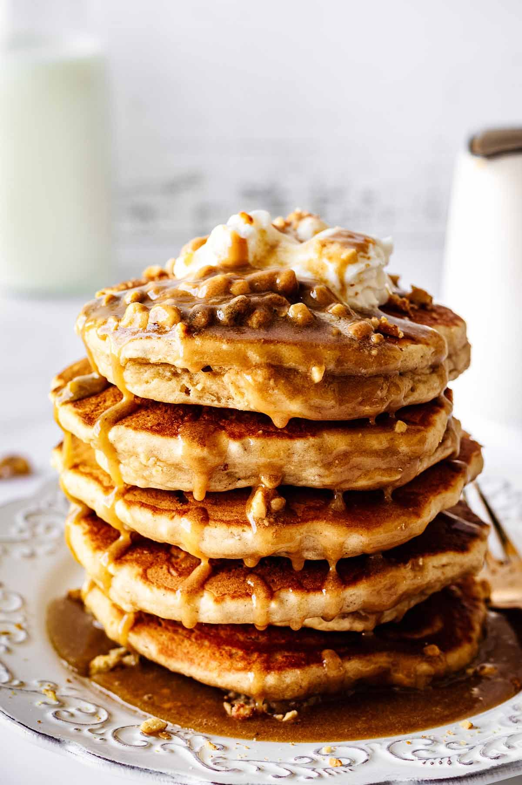

Pancakes

Description
These are very light and tender pancakes. These pancakes are excellent with maple syrup.
Ingredients
- 1 cup whole wheat flour
- 2/3 cup all-purpose flour
- 1/3 cup wheat germ
- 1 1/2cup wheat germ
- 1/2 teaspoon baking powder
- 2 tablespoon brown sugar
- 1 teaspoon salt
- 5 1/3tablespoons unsalted butter
- 2 1/2cups buttermilk
- 2 eggs, beaten
- 3 tablespoons unsalted butter
Return to Odin recipes